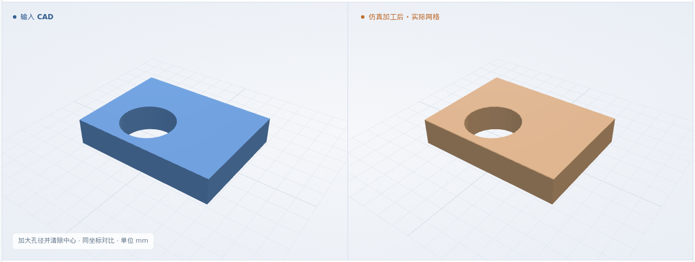
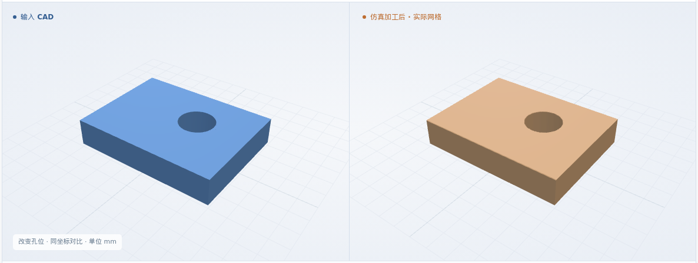
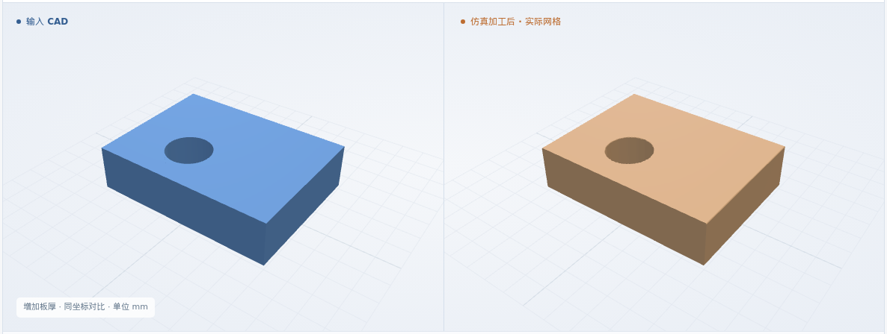
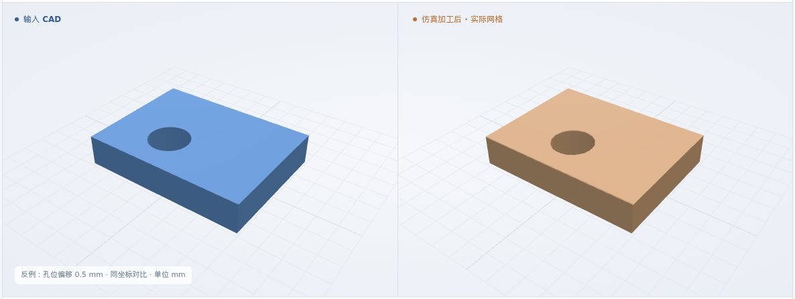
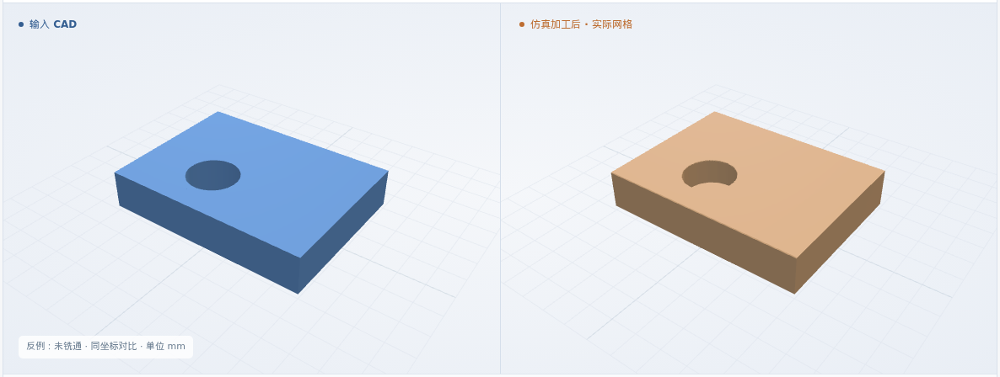
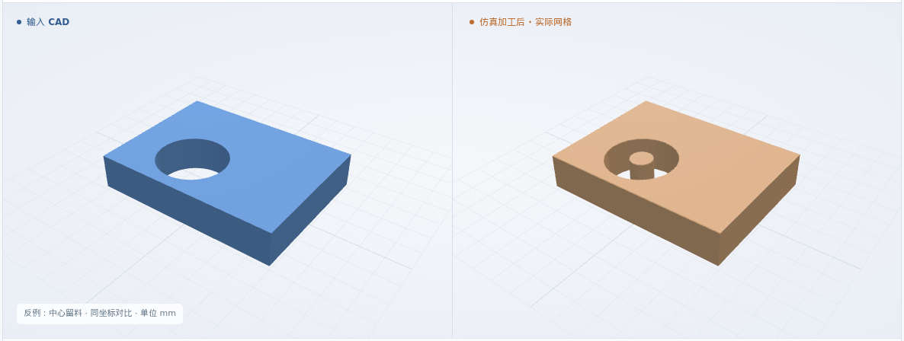

螺旋铣通孔
φ2 通孔 · 孔心 (3, 2) · 板厚 1.5 mm
最终网格 0.025 mm
体积 IoU99.9097%
本次新增：小铣刀加工较大通孔 · FreeCAD 原生 Helix 螺旋进给 · 中心留料与未贯穿检查
体积 IoU = 原 CAD 与实际剩料的交集 / 并集
φ2 通孔 · 孔心 (3, 2) · 板厚 1.5 mm
最终网格 0.025 mm
φ3 通孔 · 孔心 (3, 2) · 板厚 1.5 mm
最终网格 0.025 mm

φ2 通孔 · 孔心 (5, 3.5) · 板厚 1.5 mm
最终网格 0.025 mm

φ2 通孔 · 孔心 (3, 2) · 板厚 2 mm
最终网格 0.03 mm

通用 XYZ · φ1 平底铣刀 · 6061-T6 标签。四个合成用例；加厚例最终网格 0.03 mm，其余 0.025 mm。
毛坯 → 螺旋进入 → 孔内清料 → 贯穿完成
三维回放暂不可用；上方实际图片和形状下载仍可查看。
基准孔 (3, 2)，板厚 1.5 mm；大孔增加径向扩铣，其余流程相同
工艺卡 PDF + 核对录入 + CAD + 要求 + 资源
结构化工艺卡 · PDF 同步存档↓输出核对铣孔意图、原 CAD 孔面和刀具；入刀间隙、贯穿余量及孔内快速移动规则须明确。
准备检查通过 ↗复核原 CAD；检查圆心、螺距、底部整圈和径向清料覆盖。孔内快速移动只能经过已清空区域。
NC 与方案一致 ↗执行同一螺旋 NC；与原 CAD 比 IoU，再测孔径、孔位和贯穿，检查中心残料。
几何比对与测量 ↗孔径与孔位按各例冻结的软件条件判断：允许量为 4 个网格步长，保护带为 2 个网格步长。11 个孔壁截面、9 条轴向贯穿探测线；有限采样不能代替完整制造验收。
软件条件 ↗ · 完整结果 ↗制造验收依据仍待补齐；粗糙度、真实装夹和材料物理尚未验证。
正常入口先拒绝错误 NC；专用反例实际去料后，由对应几何项检出。中心留料例保留外侧铣削，检验必须看到孔内余料。
只修改 NC；与对应正常例的原 CAD 比较
最终网格 0.025 mm

只修改 NC；与对应正常例的原 CAD 比较
最终网格 0.025 mm
只修改 NC；与对应正常例的原 CAD 比较
最终网格 0.025 mm

只修改 NC；与对应正常例的原 CAD 比较
最终网格 0.025 mm
